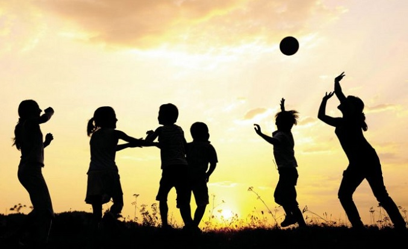
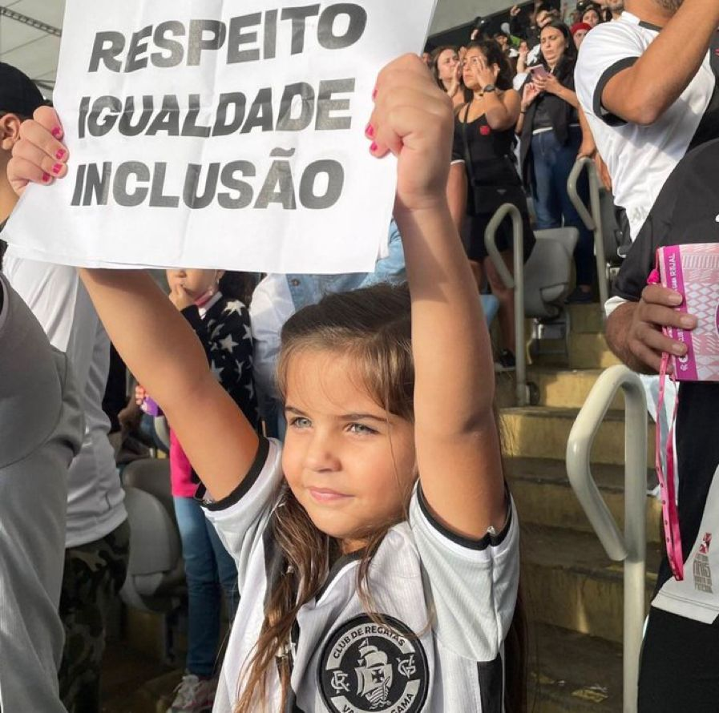
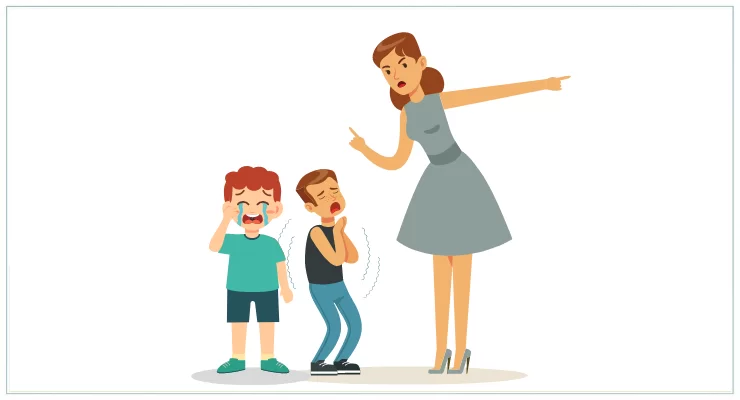
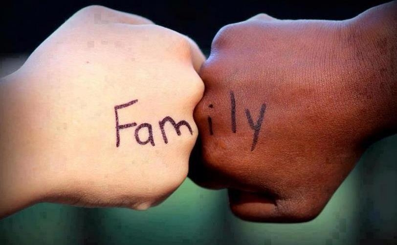

A criança e o adolescente têm
direito à liberdade, ao respeito e
à dignidade como pessoas
humanas em processo de
desenvolvimento e como
sujeitos de direitos civis,
humanos e sociais garantidos
na Constituição e nas leis.
O direito à liberdade compreende os seguintes aspectos:
I – ir, vir e estar nos logradouros públicos e espaços comunitários,
ressalvadas as restrições legais;
II – opinião e expressão;
III – crença e culto religioso;
IV – brincar, praticar esportes e divertir-se;
V – participar da vida familiar e comunitária, sem discriminação;
VI – participar da vida política, na forma da lei;
VII – buscar refúgio, auxílio e orientação.

O direito ao respeito consiste na
inviolabilidade da integridade
física, psíquica e moral da
criança e do adolescente,
abrangendo a preservação da
imagem, da identidade, da
autonomia, dos valores, ideias e
crenças, dos espaços e objetos
pessoais.

É dever de todos velar pela dignidade da criança e do adolescente, pondo-os
a salvo de qualquer tratamento desumano, violento, aterrorizante, vexatório
ou constrangedor.

Aos pais incumbe o dever de sustento, guarda e
educação dos filhos menores, cabendo-lhes
ainda, no interesse destes, a obrigação de
cumprir e fazer cumprir as determinações
judiciais.
Parágrafo único. A mãe e o pai, ou os
responsáveis, têm direitos iguais e deveres e
responsabilidades compartilhados no cuidado e
na educação da criança, devendo ser
resguardado o direito de transmissão familiar de
suas crenças e culturas, assegurados os direitos
da criança estabelecidos nesta Lei.
Entende-se por família natural a
comunidade formada pelos pais ou qualquer
deles e seus descendentes.
Parágrafo único. Entende-se por família
extensa ou ampliada aquela que se estende
para além da unidade pais e filhos ou da
unidade do casal, formada por parentes
próximos com os quais a criança ou
adolescente convive e mantém vínculos de
afinidade e afetividade.
A colocação em família substituta estrangeira constitui
medida excepcional, somente admissível na modalidade de
adoção.

A criança e o adolescente têm direito à educação,
visando ao pleno desenvolvimento de sua pessoa,
preparo para o exercício da cidadania e qualificação
para o trabalho, assegurando-se-lhes:
I – igualdade de condições para o acesso e
permanência na escola;
II – direito de ser respeitado por seus educadores;
III – direito de contestar critérios avaliativos, podendo
recorrer às instâncias escolares superiores;
IV – direito de organização e participação em entidades
estudantis;
V – acesso à escola pública e gratuita próxima de sua
residência.
Parágrafo único. É direito dos pais ou responsáveis ter
ciência do processo pedagógico, bem como participar
da definição das propostas educacionais.